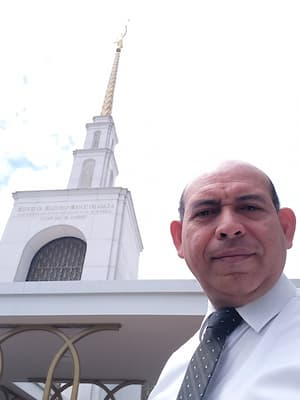

José Colina | WDD 130

Soy una persona perseverante, responsable y dedicada, comprometida con mi crecimiento personal y profesional. Mi fe como miembro de la Iglesia de Jesucristo de los Santos de los Últimos Días guía mis acciones y me inspira a vivir con integridad, respeto y espíritu de servicio. Me caracterizo por mi deseo constante de aprender, mi capacidad para trabajar en equipo y mi actitud positiva frente a los desafíos. Además, afronto las dificultades con resiliencia y creatividad, buscando siempre aportar de manera positiva a quienes me rodean. Me adapto con facilidad a nuevos entornos y oportunidades de aprendizaje, manteniendo una actitud abierta al cambio. Valoro la honestidad, la disciplina y la empatía como principios fundamentales en mi vida. Mi objetivo es seguir desarrollándome y contribuir de manera significativa en cada proyecto o responsabilidadque asumo.